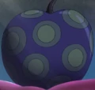
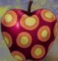
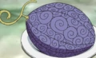
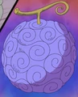
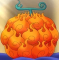

Mais que Smile
| Produto | Descrição | Preço (฿) | Quantidade disponível |
|---|---|---|---|
|  | Akuma no Mi Artificial: primeira fruta feita por humanos | 1.500.000 | 1 |
|  | Smile: Akuma no Mi artificiais do tipo Zoan criadas com SAD. | 2.500.000 | 1589 |
|  | Awa Awa no Mi é uma Akuma no Mi do tipo Paramecia que permite ao usuário de emitir e controlar bolhas de sabão. | 3.000.000 | 1 |
|  | A Gomu Gomu no Mi[1] é uma Akuma no Mi do tipo Paramecia que dá ao corpo do usuário as propriedades da borracha | 25.000.000 | 1 |
|  | A Mera Mera no Mi é uma Akuma no Mi do tipo Logia que permite ao usuário criar, controlar e se transformar em Chamas à vontade. | 45.000.000 | 1 |